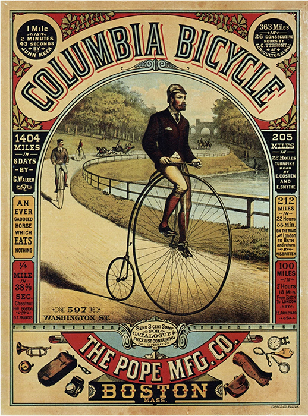

Ye Olde Cycle Shoppe
Serving Boston since 1982
Serving Boston since 1982
Mon-Sat
9am-5pm
Call Us
617-555-0123
Ye Olde Cycle Shoppe is full-service bicycle store in Boston, MA, focusing on the daily rider. Whetheryou commute by bicycle, compete in races, ride long-distance tours, or prefer leisurely rides around the neighborhood, we have your cycling solution. We want to make your cycling experience great!
We sell bikes from all brands. When you buy a bike from us, we provide free mechanical adjustments for as long as you own it. We sell bicycle parts, accessories, and cycling gear from select brands. We specialize in products that will make your bike more useful for urban transportation.
We have a professional repair workshop where our experienced mechanics perform all types of repair services. Whether we're fixing a flat tire on a well-worn commuter, or building a custom dream bike, we always provide our customers with honest, professional service. We pride ourselves on providing accurate estimates and a quick turnaround time for all repairs, with a focus on customer satisfaction. Our friendly and knowledgeable staff are happy to help!
We strive to provide accurate and timely customer support, quick shipping, easy returns, and some of the greatest cycling products available.